OutLangSplat：面向无人机室外场景的三维语言 Gaussian SplattingOutLangSplat: 3D Language Gaussian Splatting for UAV Outdoor Scenes
与 UAV 大尺度三维语义地图和 3DGS 密切相关，并提供新 benchmark；代码尚未实际开放，且不直接解决相机定位。
一句话工作总结
用 2D–3D 对齐和跨视角可靠性聚合，让语言 3DGS 适应长距离、强遮挡的 UAV 室外语义场景。
摘要
OutLangSplat 将开放词汇语言 Gaussian 表示扩展到无人机室外场景，针对严重遮挡和远距离视角导致的语义误激活与目标漏检。其 2D–3D 双分支表示通过区域级对齐和融合提升空间一致性；无需训练的贡献度与一致性感知聚合则利用像素贡献可靠性和跨视图语义一致性抑制噪声视角。作者还为四个真实公共 UAV 场景数据集标注多类对象，并报告开放词汇分割和实例定位优于现有方法。
3D Language Gaussian Splatting embeds open-vocabulary language features into 3D Gaussian Splatting, providing an efficient explicit representation for text-driven 3D scene understanding. However, existing methods are limited to indoor or small-scale scenes, and tend to fail in Unmanned Aerial Vehicle (UAV) outdoor scenes, where severe occlusions and long distance viewpoints often lead to incorrect semantic activations and missing target responses. In this paper, we present OutLangSplat which adapts language Gaussian representations to UAV outdoor scenes by improving feature representation and aggregation reliability. For the feature representation, a 2D-3D dual-branch representation with region-based alignment and fusion is designed to improve spatial consistency, reducing incomplete target responses and background misactivations. For the feature aggregation, we introduce a training-free contribution and consistency-aware Gaussian feature aggregation strategy that leverages pixel contribution reliability and cross-view semantic consistency to suppress unreliable responses from noisy viewpoints. A new dataset is provided by manually annotating various objects on four real-world public UAV outdoor scene datasets. To the best of our knowledge, it is the first accessible dataset of open-vocabulary 3D scene understanding for UAV outdoor scenes. Quantitative evaluations and ablation studies demonstrate that OutLangSplat outperforms SOTA methods on both open-vocabulary semantic segmentation and instance localization tasks. The datasets and codes will be open-sourced.
中文解读摘录
- 原题：Swimm3R: Splatting with Medium-aware SfM for Underwater 3D Reconstruction
- 作者：Minseong Kweon, Junaed Sattar
- 推荐评分：9.2/10
- 核心方法：把空气中几何先验蒸馏到前馈骨干，并用物理 head 联合回归水下成像参数、相机位姿和恢复点云；随后用带 Beta primitives 与散射感知几何梯度的 Underwater Beta Splatting 表示场景。
- 为何值得看：它不是单纯先增强图像再做 SfM，而是把散射、衰减、位姿和几何放进统一框架。论文报告相对 WaterSplatting 平均 PSNR 提升 1.47 dB，RRA@15/RTA@15 分别提高 2.0/2.4 个百分点；需进一步检查 Barbados 数据集规模、跨水体泛化和绝对尺度。
图表/页面预览

{kind=link}
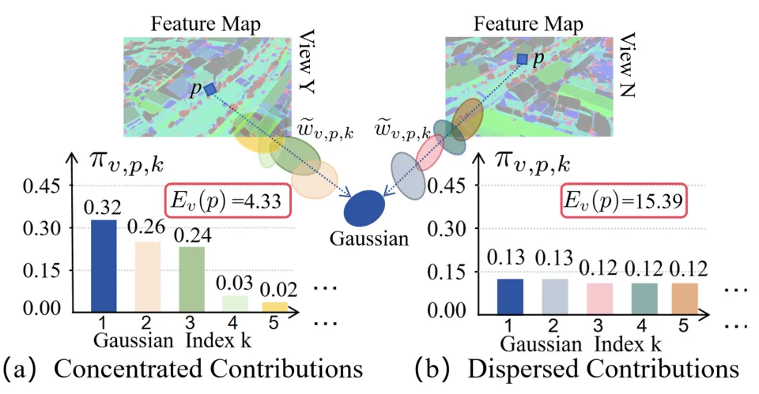
{kind=link}
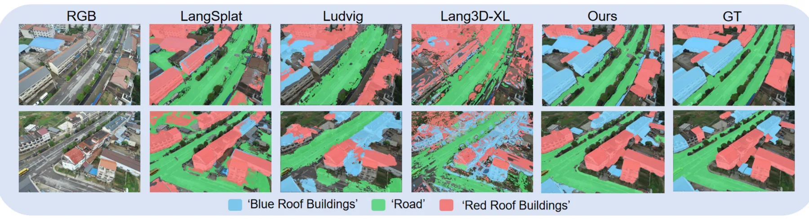
{kind=link}
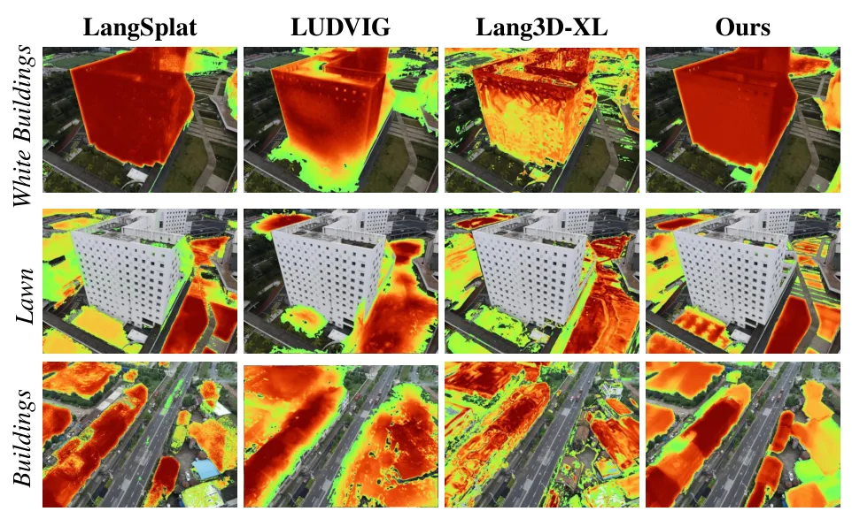
{kind=link}
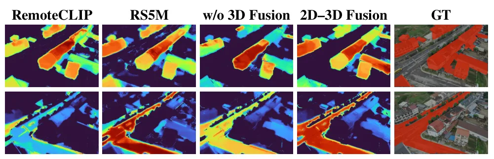
{kind=link}
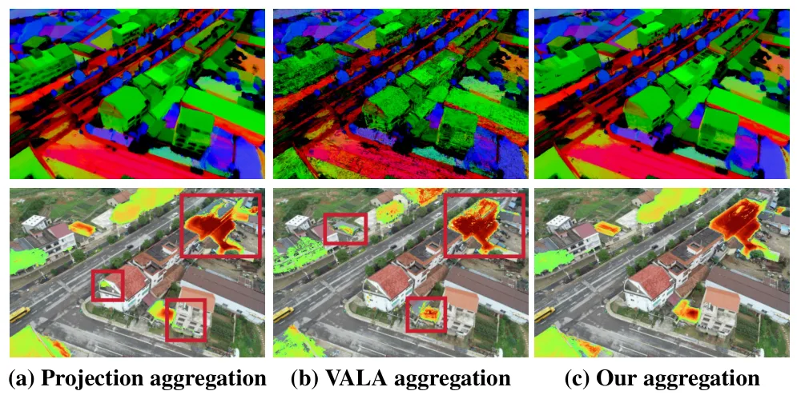
{kind=link}
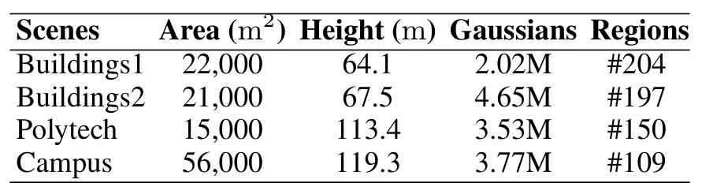
{kind=link}
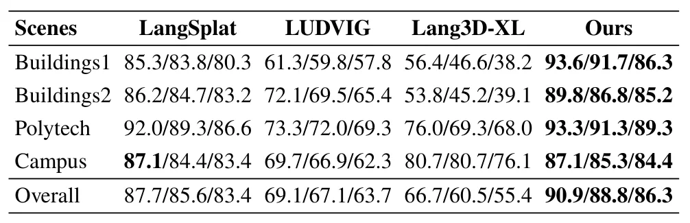
{kind=link}
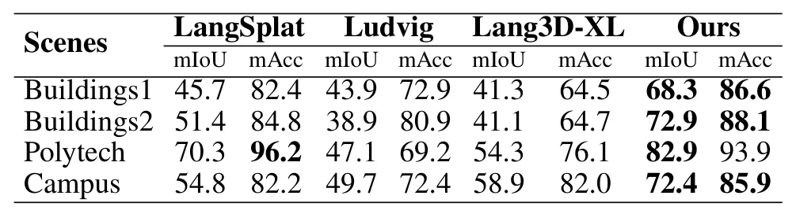
{kind=link}
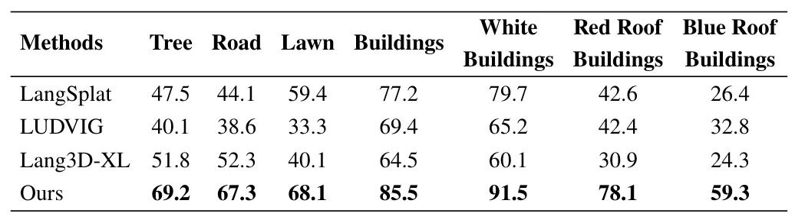
{kind=link}
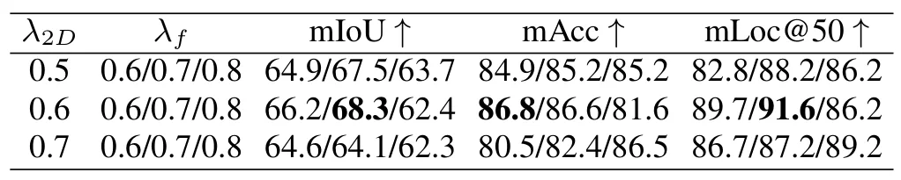
{kind=link}
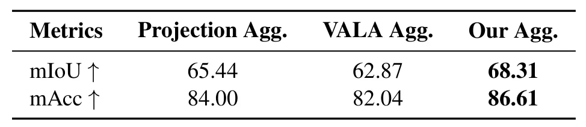